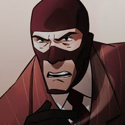

Origins

Much like the Pyro, the Spy is one of the most mysterious mercenaries on the team, as both his identity and name are unknown. Not much is really known about his past but all that is known is that he was born in France in an unknown region. It's a mystery on how he became a master spy and a master of disguise as no one knows if someone trained him or he rather he trained himself.
Moreover, he seemed to have taken etiquette classes, which explains on how he acts like a gentleman really well. The Spy seems to have a romantic relationship with the Scout's mother, though it still remains a mystery on how and why they know each other well. In a dream the Scout had, the Spy is his birth father, which was later confirmed in the TF2 comic The Naked and the Dead.